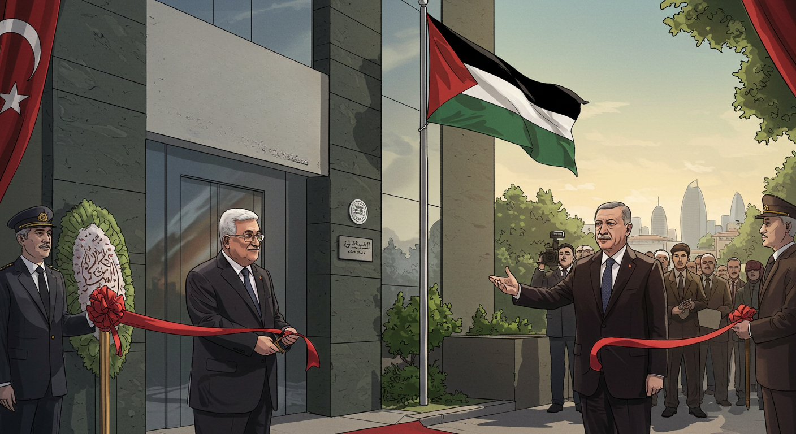

أواصر التاريخ: رحلة العلاقات الفلسطينية التركية
من عمق الإرث العثماني إلى تضامن الحاضر، نستعرض فصولاً من تاريخ مشترك نسجته الأحداث ورسخته القيم.
تمتد جذور العلاقات الفلسطينية التركية عبر قرون من الزمن، حيث شكلت فلسطين جزءاً حيوياً من النسيج الحضاري للدولة العثمانية لما يقرب من أربعمائة عام. هذا الامتداد التاريخي لم يقتصر على الجوانب الإدارية فحسب، بل تعداه ليشمل تفاعلات ثقافية واجتماعية عميقة تركت بصماتها الواضحة حتى يومنا هذا. ومع بزوغ فجر العصر الحديث، اتخذت هذه العلاقات أبعاداً جديدة، تجسدت في مواقف سياسية ودبلوماسية راسخة، أبرزها الدعم التركي الثابت والمتواصل للقضية الفلسطينية وحقوق الشعب الفلسطيني غير القابلة للتصرف.
محطات مضيئة في مسيرة مشتركة
فلسطين تحت المظلة العثمانية
انضوت فلسطين تحت راية الدولة العثمانية في عهد السلطان سليم الأول، لتبدأ حقبة امتدت لأربعة قرون، شهدت خلالها تطورات إدارية وعمرانية وثقافية بارزة، مع الحفاظ على الطابع المتنوع للمنطقة.

نهاية الحقبة العثمانية وبداية الانتداب
مع مجريات الحرب العالمية الأولى، ودخول القوات البريطانية بقيادة الجنرال اللنبي، طويت صفحة الحكم العثماني في فلسطين، لتبدأ مرحلة الانتداب البريطاني.
تأسيس القنصلية التركية العامة في القدس
في خطوة تعكس الأهمية التاريخية والدينية، بادرت الجمهورية التركية الفتية إلى تأسيس قنصليتها العامة في مدينة القدس، والتي استمرت في أداء دورها كحلقة وصل دبلوماسية.
فتح ممثلية منظمة التحرير ورفع العلم الفلسطيني في أنقرة
توجت العلاقات النامية بين تركيا ومنظمة التحرير الفلسطينية بافتتاح ممثلية للمنظمة في العاصمة أنقرة. وشهد يوم 5 أكتوبر 1979 لحظة تاريخية برفع العلم الفلسطيني لأول مرة فوق مبنى الممثلية خلال زيارة رسمية للرئيس ياسر عرفات.
تسمية "شارع فلسطين" في العاصمة أنقرة
كتعبير عن عمق الروابط، تم إطلاق اسم "شارع فلسطين" على الشارع الذي يضم مبنى ممثلية منظمة التحرير الفلسطينية، وذلك في احتفالية رسمية وشعبية.

الاعتراف التركي بدولة فلسطين
عقب إعلان استقلال دولة فلسطين في الجزائر بتاريخ 15 نوفمبر، سارعت تركيا لتكون من أوائل الدول المعترفة بالدولة الفلسطينية، مؤكدةً بذلك دعمها الراسخ للحقوق الفلسطينية.
ارتقاء التمثيل الدبلوماسي: ممثلية فلسطين تصبح سفارة
ترجمةً للاعتراف الرسمي، تم رفع مستوى التمثيل الدبلوماسي الفلسطيني في أنقرة من ممثلية إلى سفارة دولة فلسطين لدى الجمهورية التركية.
مقر جديد للسفارة الفلسطينية في منطقة أوران
انتقلت سفارة دولة فلسطين إلى مبناها الجديد والحديث في منطقة أوران الراقية بأنقرة، وتم الافتتاح الرسمي بحضور الرئيس محمود عباس ونظيره التركي آنذاك.
"شارع القدس" في أنقرة: رمزية المكانة
تأكيداً على مركزية القدس في الوجدان التركي والفلسطيني، بادرت بلدية أنقرة إلى تسمية الشارع التجاري المحاذي لمبنى السفارة الفلسطينية الجديد باسم "شارع القدس".